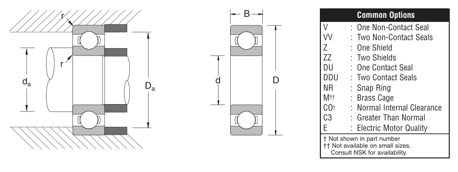

Original catalogue drawing - NSK catalogue, page 23

Scanned from the manufacturer catalogue page listing this part number. All part numbers printed on that table share the same drawing.
Scale cross-section
Blue = inner / outer ring, yellow = rolling element. Drawn to scale from this part's own
dimensions for selection reference only - not a manufacturing or assembly drawing.
Dimension table (mm / inch)
Symbol
Dimension
mm
inch
d
Bore diameter
110
4.3307
D
Outside diameter
150
5.9055
B
Inner-ring / bearing width
20
0.7874
r
Chamfer (min)
0.991
0.039
Notes
Weights are given in kg. Load ratings are shown in both the original catalogue units and the converted value (1 N = 0.2248 lbf). Data is provided for selection reference only - confirm against the latest official catalogue before ordering.
Main dimensions
Bore d (mm)
110
Bore d (in)
4.3307
Outside dia. D (mm)
150
Outside dia. D (in)
5.9055
Width B (mm)
20
Width B (in)
0.7874
Load ratings & speeds
Basic dynamic load rating Cr (lbs)
9790
Basic static load rating Cor (lbs)
10000
Limiting speed - grease (rpm)
4,300
Limiting speed - oil (rpm)
5,000
Factor f0
16.6
Weight
Weight (kg)
0.866
Mounting dimensions (fillets / shoulders)
Chamfer r (in)
0.039
Shaft shoulder da min (in)
4.587
Shaft shoulder da max (in)
4.764
Housing shoulder Da max (in)
5.650
Bearing life (ISO 281 basic rating life)
C / P
Equivalent load P (N)
L10 (106 rev)
L10h at 1,400 rpm
4
10,887
64
762
6
7,258
216
2,571
8
5,444
512
6,095
10
4,355
1,000
11,905
15
2,903
3,375
40,179
Basic rating life per ISO 281: L10 = (C/P)3 with C = 43,548 N. Hours = L10 x 106 / (60n). Life-modification factors for lubrication, contamination and temperature (aISO) are not included.
Source & traceability
Brand
NSK
Source catalogue
NSK inch product catalogue
Catalogue page
p.25 (dimensions) / p.26 (ratings)
Dimensions in inches and millimetres, load ratings in lbs.
Send us the quantity you need and we will come back with price and
lead time, normally within 24 hours. Equivalent parts from other brands can be quoted at the same time.